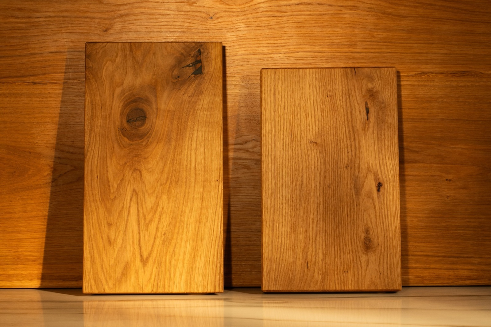
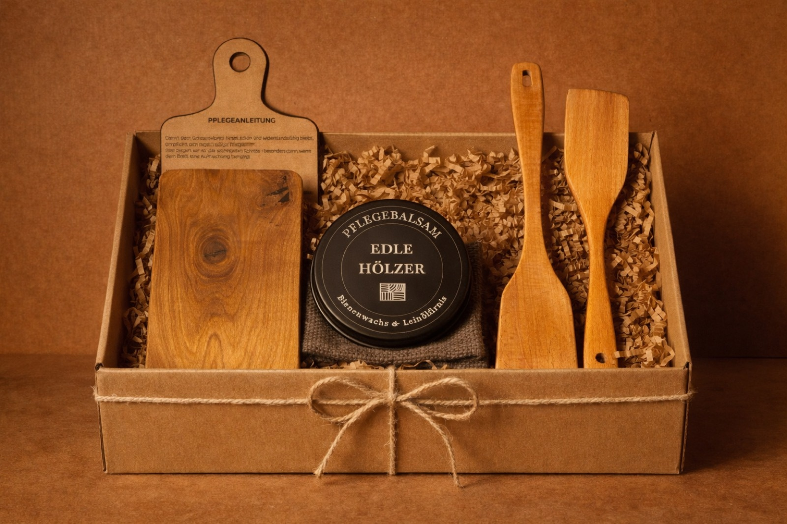
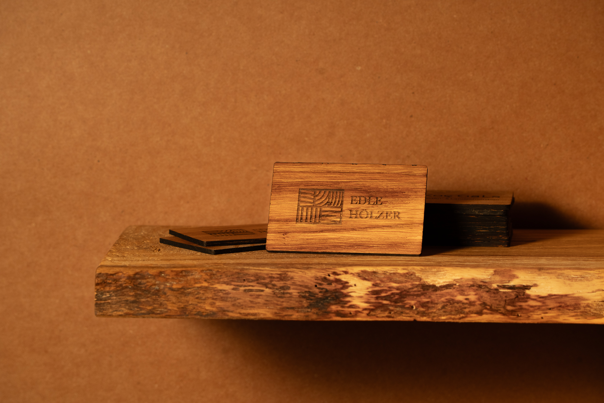

Massivholz, handgefertigt, in verschiedenen Formaten und mit oder ohne Gravur. Das Kernprodukt für Mitarbeiter-, Kunden- und Partnergeschenke.

Kombinationen aus Brett und Pflegeprodukt, auf Wunsch ergänzt um kleine Küchenhelfer. Für ein runderes Geschenk mit mehr Wirkung.

Ein haptisches Markenobjekt für Messen, exklusive Erstkontakte oder Branchen, in denen Materialwirkung einen Unterschied macht.